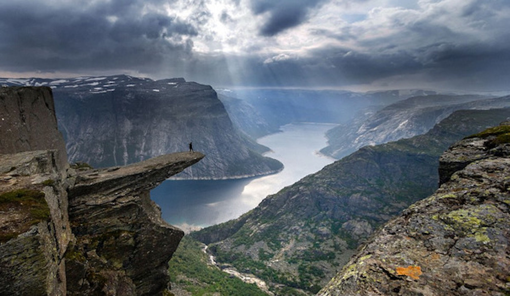
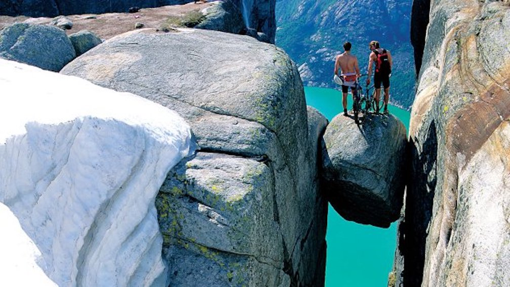
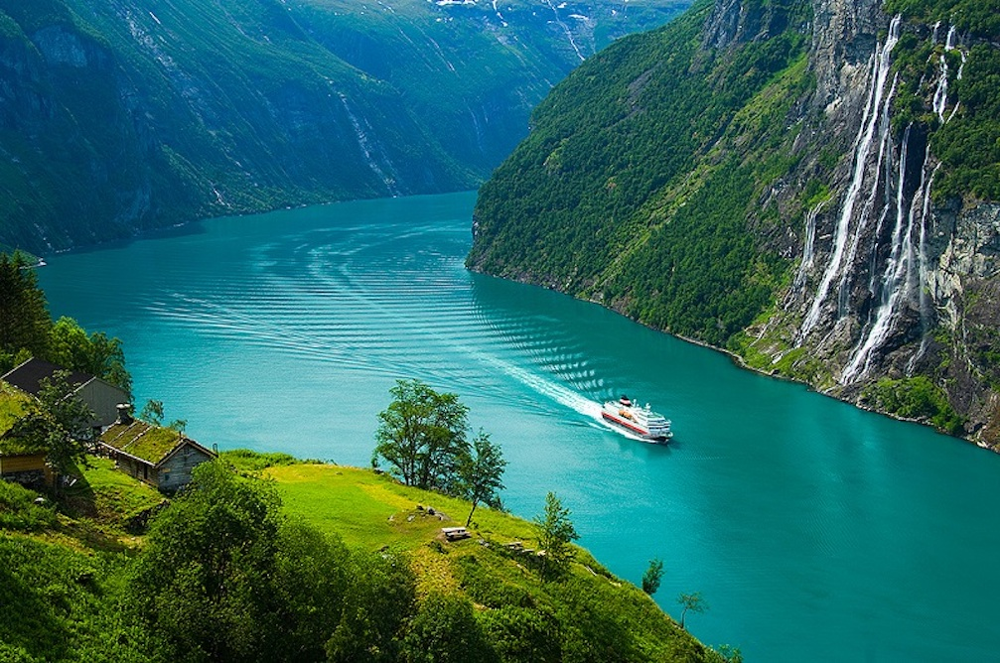
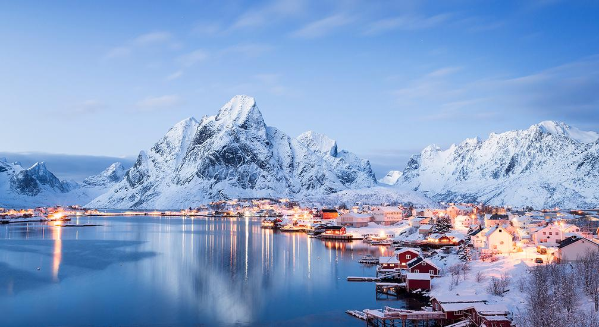

1. Язик Троля (Trolltunga): побачити ... і жити з натхненням.
Ця природна дивовижа - мрія чи не кожного мандрівника, закоханого в Норвегію. Космічні пейзажі, відкритість вітрам, сувора неприступність і нереальна фотогенічність - ось заради чого піднімаються туристи на виступ скелі Скьеггедаль, що нагадує за формою язик могутнього велетня. Але норвежці не були б норвежцями, якби не приписали цю «частину тіла» символу країни - казковому тролю. Найближчий аеропорт до Язика троля - в Бергені. Угорський лоукост "Wizz Air" пропонує прямі перельоти з Варшави від 30 євро в одну сторону (з ручною поклажею). Також можна летіти в Осло, а звідти в Берген - на поїзді. Квиток на нього буде коштувати близько 40 євро. Найпростіший спосіб роздобути фото на Язику Троля - записатися на організовану екскурсію у туроператора або в місцевому туристичному бюро: дивіться, насолоджуйтеся і шліть селфі нещасним, ще не дістався сюди. Але врахуйте: вас чекає 5 годин пішого ходу під гору!
2. Кьерагболтен: коли серце по справжньму йде в п'яти.
Люсі-фіорд - чи не найбільша туристична "зірка" серед своїх фьордів- "побратимів". І справа навіть не в панорамі, що захоплює дух, а в великому кругляку, що застряг між двома прямовисними скелями К’єрагболтене. Залазять на нього без спеціального спорядження і все: фото просто "порвуть" підписників в Instagram, адже глибина прірви під каменем - тисячу метрів! Дістатися до "каменю-горошини" на громадському транспорті можна з Осло, Бергена або екскурсійним поромом з Ставангера.
3. Водоспад Сім сестер, або складнощі вибору.
Це головна родзинка Гейрангер-фіорду. І з назвою пов'язана красива легенда: кажуть, суворий вікінг прийшов з фатою свататися в сім'ю, де було сім сестер. Всі дівчата були такі прекрасні, що чоловік просто скам'янів, не зумівши вибрати одну з них. Красуні від довгого стояння перетворилися в потоки води. Так і красуються сім потужних струменів з фатою із зелені і каменів перед неприступними скелями. Найрозкішніший водоспад навесні і влітку, коли тане льодовик робить його більш повноводним. Щоб привітатися з "сестрами", туристи їдуть 280 кілометрів на північний захід від Осло.
4. Cкеля Прекестулен.
Уявіть собі височенну скелю, вершина якої рівна, квадратної форми. З неї відкривається нереальний вигляд на гори і море. Розміри дозволяють зіграти в екстремальний міні-футбол - 25*25 метрів. Саме так виглядає Прекестулен - ще одна визначна пам'ятка Люсі-фьорда.

5. Лофотенські острови: приголомшлива краса.
Якщо фіорди урізаються в сушу, то Лофотени нагадують відкриту долоню у воді. Можливо, тому в селах на островах і живуть такі ж люди - відкриті, привітні і гостинні. Одне з наймальовничіших поселень - Рейні. Більшість його жителів займаються рибальським промислом. І все це - на фоні дико гарної природи. Найближчий до архіпелагу аеропорт - в Буді. З Осло туди регулярно літають літаки. Звідти 20-30 хвилин на автобусі або машині - і ви застигаєте від подиву!
